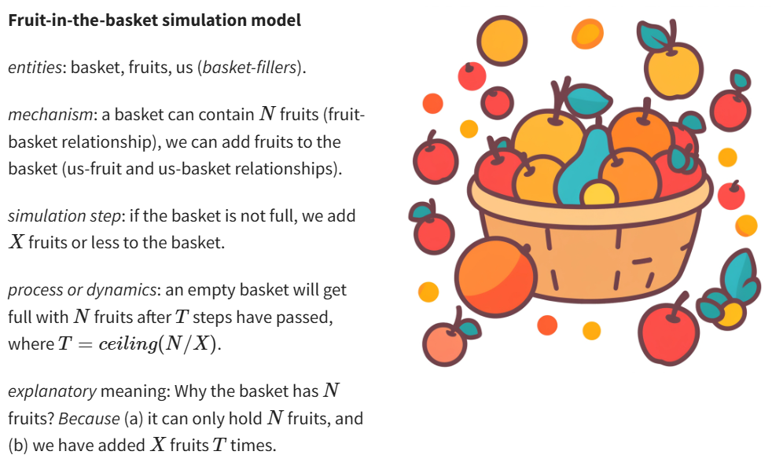
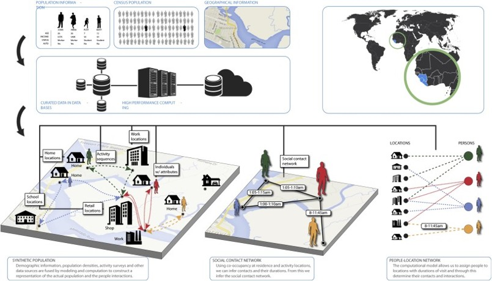

## 1. Introduction to ABM --- ## 1.1 A teaser: Schelling's segregation model <a href="https://ncase.me/polygons" target="_blank"> <img src="assets/images/ncase-shelling.PNG" alt="ncase-shelling" style="width: 450px; border: none; box-shadow: none; vertical-align:super"> </a> <a href="http://ccl.northwestern.edu/netlogo/models/Segregation" target="_blank"> <img src="assets/images/Segregation Simple interface.png" alt="shelling-netlogo" style="width: 350px; border: none; box-shadow: none"> </a> --- ## 1.2 ABM as a tool for complexity <a title="Acadac, Public domain, via Wikimedia Commons" href="https://commons.wikimedia.org/wiki/File:Complex-adaptive-system.jpg"><img width="512" alt="Complex-adaptive-system" src="https://upload.wikimedia.org/wikipedia/commons/thumb/0/00/Complex-adaptive-system.jpg/512px-Complex-adaptive-system.jpg?20050529073219"></a> [Complex systems](https://en.wikipedia.org/wiki/Complex_system) | [Complex adaptive systems](https://en.wikipedia.org/wiki/Complex_adaptive_system) --- ## 1.2 ABM as a tool for complexity ### How does ABM help us to study complex systems? * **Formalizing definitions** of elements within the system. * Defining **rules as algorithms** to govern interactions between elements. * Simulating a **population as distributed processes**. * Creating a **bottom-up approach to modelling** to study emergent properties. * Incorporating **stochasticity** to generate probabilistic results. --- ## 1.2 ABM as a tool for complexity <a href="https://link.medium.com/1uqbZW0M2T" target="_blank"><img src="https://cdn-images-1.medium.com/max/1600/1*yrVzKSeqaA1O3G3HF-AHlw.gif"> <br>Flocking behaviour in 'Behavioral systems' by Danil Nagy in 'Generative Design', medium.com</a> --- ## 1.2 ABM as a tool for complexity ### What can we study with ABM? * Tool for social science - interactions/behaviours and emergence/structure - mentality and agency - cultural evolution - social norms and institutions * Tool for socio-ecological systems - Spacially explicit environment and resources - Human and non-human agency - Handling coupled human-environment systems feedbacks --- ## 1.3 ABM as mathematical models <img src="https://github.com/Andros-Spica/modelling-simulation-graphs/blob/main/from-model-to-simulation-models/from-model-to-simulation-models_p1.png?raw=true" alt="models to math models" style="width: 550px; border: none; box-shadow: none; margin-bottom: 0%; background-color: azure;"/> --- ## 1.3 ABM as mathematical models ### A simple example: a linear regression model >y = a + b·x  <a title="Krishnavedala, CC BY-SA 3.0 <https://creativecommons.org/licenses/by-sa/3.0>, via Wikimedia Commons" href="https://commons.wikimedia.org/wiki/File:Linear_least_squares_example2.svg"><img width="256" alt="Linear least squares example2" src="https://upload.wikimedia.org/wikipedia/commons/thumb/b/b0/Linear_least_squares_example2.svg/256px-Linear_least_squares_example2.svg.png?20110610033522"></a> --- ## 1.3 ABM as mathematical models ### Francis Anscombe's quartet <a title="Anscombe.svg: Schutz (label using subscripts): Avenue, CC BY-SA 3.0 <https://creativecommons.org/licenses/by-sa/3.0>, via Wikimedia Commons" href="https://commons.wikimedia.org/wiki/File:Anscombe%27s_quartet_3.svg"><img width="512" alt="Anscombe's quartet 3" src="https://upload.wikimedia.org/wikipedia/commons/thumb/e/ec/Anscombe%27s_quartet_3.svg/512px-Anscombe%27s_quartet_3.svg.png?20100326171813"></a> --- ## 1.3 ABM as mathematical models ### Spurious correlations <a title="Smallbones, CC0, via Wikimedia Commons" href="https://commons.wikimedia.org/wiki/File:Illiterate_Dinos.jpg"><img width="256" alt="Sign by West Pittston, PA library, reading 'Dinosaurs didn't read. Now they are extinct'." src="https://upload.wikimedia.org/wikipedia/commons/thumb/5/53/Illiterate_Dinos.jpg/256px-Illiterate_Dinos.jpg?20161024200135"></a> <a title="Spurious correlation #2,730, Tyler Vigen, tylervigen.com" href="https://www.tylervigen.com/spurious/correlation/2730_the-distance-between-uranus-and-the-moon_correlates-with_electricity-generation-in-japan"><img width="324" alt="" src="https://www.tylervigen.com/spurious/correlation/image/2730_the-distance-between-uranus-and-the-moon_correlates-with_electricity-generation-in-japan_mobile.svg"></a> --- ## 1.3 ABM as mathematical models ### Example: modelling a watering can <a title="Santeri Viinamäki, CC BY-SA 4.0 <https://creativecommons.org/licenses/by-sa/4.0>, via Wikimedia Commons" href="https://commons.wikimedia.org/wiki/File:Green_watering_can.jpg"> <img width="256" alt="Green watering can" src="https://upload.wikimedia.org/wikipedia/commons/thumb/7/7c/Green_watering_can.jpg/512px-Green_watering_can.jpg" style="border: none; box-shadow: none;"></a> <img width="256" alt="Picture maze solving -observations" src="assets/images/Picture_maze_solving_observations.png" style="border: none; box-shadow: none; margin-bottom: -2%;"> Target reality | Observations --- ## 1.3 ABM as mathematical models ### Example: modelling a watering can A model that returns... <img width="256" alt="Picture maze solving - descriptive model" src="assets/images/Picture_maze_solving_descrip-model.png" style="border: none; box-shadow: none; margin-bottom: -2%;"> <a title="Original: User:Icey, Animation: User:MichaelFrey, CC BY-SA 4.0 <https://creativecommons.org/licenses/by-sa/4.0>, via Wikimedia Commons" href="https://commons.wikimedia.org/wiki/File:Picture_maze_solving.gif"> <img width="256" alt="Picture maze solving - explanatory model" src="https://upload.wikimedia.org/wikipedia/commons/b/b2/Picture_maze_solving.gif" style="border: none; box-shadow: none; margin-bottom: -2%;"></a> the output given the input | ... **and the definition of a mechanism** --- ## 1.3 ABM as mathematical models <img src="https://github.com/Andros-Spica/modelling-simulation-graphs/blob/main/from-model-to-simulation-models/from-model-to-simulation-models_p2.png?raw=true" alt="models to math models" style="width: 550px; border: none; box-shadow: none; margin-bottom: 0%; background-color: azure;"/> --- ## 1.4 ABM as simulation models >"A simulation is an **imitative representation of a process or system** that could exist in the real world. In this broad sense, simulation can often be used interchangeably with model. Sometimes a clear distinction between the two terms is made, in which simulations require the use of models; the model represents the **key characteristics or behaviors** of the selected system or process, whereas the simulation represents the **evolution of the model over time**. Another way to distinguish between the terms is to define simulation as experimentation with the help of a model." *Simulation*, [Wikipedia](https://en.wikipedia.org/wiki/Simulation) --- ## 1.4 ABM as simulation models ### 1.4.1 Algorithmic process  --- ## 1.4 ABM as simulation models ### 1.4.1 Algorithmic process ](assets/images/Gale-Shapley-algorithm.png) Pseudo-code for the Gale–Shapley algorithm to solve the [Stable Marriage Problem](https://en.wikipedia.org/wiki/Stable_marriage_problem) --- ## 1.4 ABM as simulation models ### 1.4.2 Distributed processes <a href="http://jasss.soc.surrey.ac.uk/12/1/1.html" target="_blank"><img src="http://jasss.soc.surrey.ac.uk/12/1/1/fig1.jpg" alt="Galan et al. 2009" style="width: 450px; border: none; box-shadow: none"><br>Galan et al. 2009</a> --- ## 1.4 ABM as simulation models ### 1.4.2 Distributed processes <img src="https://3.bp.blogspot.com/-8dBibQOLxv4/V4-Kd1QmFGI/AAAAAAAAJxU/XyvLVDVfzMEDLyRDdh1Sc3z_Nq7z2xPDQCLcB/s640/Figure1.png" alt="Heppenstall and Crooks 2016" style="width: 450px; border: none; box-shadow: none"><img src="http://jasss.soc.surrey.ac.uk/14/3/7/rebaudo_et_al_figure1_600px.png" alt="Rebaudo et al. 2011" style="width: 450px; border: none; box-shadow: none"> <a href="https://www.gisagents.org/2016/10/agent-based-modeling-in-geographical.html" target="_blank">Heppenstall and Crooks 2016</a> | <a href="http://jasss.soc.surrey.ac.uk/14/3/7.html" target="_blank">Rebaudo et al. 2011</a> --- ## 1.4 ABM as simulation models ### 1.4.3 Stochasticity <a href="https://www.google.com/url?sa=i&url=https%3A%2F%2Fstatisticsbyjim.com%2Fbasics%2Fnormal-distribution%2F&psig=AOvVaw38IuTrWyj0a4a-cCG0O_ms&ust=1760550183519000&source=images&cd=vfe&opi=89978449&ved=0CBgQjhxqFwoTCLDV49mepJADFQAAAAAdAAAAABAE" target="_blank"><img src="https://i0.wp.com/statisticsbyjim.com/wp-content/uploads/2018/04/pizza_delivery.png" alt="Normal distribution - example of pizza delivery" style="width: 550px; border: none; box-shadow: none; margin-bottom: 0%; background-color: azure;"/></a> --- ## 1.4 ABM as simulation models ### Random number generators <a href="https://www.google.com/url?sa=i&url=https%3A%2F%2Fwww.americanscientist.org%2Farticle%2Fthe-quest-for-randomness&psig=AOvVaw05KZrIVGKaFjFLhJts4Q1b&ust=1760549143667000&source=images&cd=vfe&opi=89978449&ved=0CBgQjhxqFwoTCNj71YmbpJADFQAAAAAdAAAAABAX" target="_blank"><img src="https://www.americanscientist.org/sites/americanscientist.org/files/20144141249210337-2014-05TechnologueFp170.jpg" alt="Random number generator Dilbert cartoon" style="width: 550px; border: none; box-shadow: none; margin-bottom: 0%; background-color: azure;"/></a> --- ## 1.4 ABM as simulation models ### 1.4.4 Point of comparison [Lotka-Volterra predator-prey model](https://en.wikipedia.org/wiki/Lotka%E2%80%93Volterra_equations)  <a title="AspidistraK, CC BY-SA 4.0 <https://creativecommons.org/licenses/by-sa/4.0>, via Wikimedia Commons" href="https://commons.wikimedia.org/wiki/File:Lotka_Volterra_dynamics.svg"><img width="400" style="background-color: white" alt="Lotka Volterra dynamics" src="https://upload.wikimedia.org/wikipedia/commons/thumb/1/16/Lotka_Volterra_dynamics.svg/512px-Lotka_Volterra_dynamics.svg.png"></a> --- ## 1.4 ABM as simulation models ### 1.4.4 Point of comparison [NetLogo's Wolf-Sheep Predation model](http://ccl.northwestern.edu/netlogo/models/WolfSheepPredation(DockedHybrid)) <a title="SethTisue, GPL <http://www.gnu.org/licenses/gpl.html>, via Wikimedia Commons" href="https://commons.wikimedia.org/wiki/File:Netlogo-ui.png"><img width="512" alt="Netlogo-ui" style="width: 450px; height: 350px; object-fit: cover; object-position: 0% 0%;" src="https://upload.wikimedia.org/wikipedia/commons/thumb/5/5c/Netlogo-ui.png/512px-Netlogo-ui.png"></a> --- ## 1.5 ABM? It's probably multiparadigm modelling </a> Bissett et al. 2021. ‘Agent-Based Computational Epidemiological Modeling’. Journal of the Indian Institute of Science 101 (3): 303–27. [https://doi.org/10.1007/s41745-021-00260-2](https://doi.org/10.1007/s41745-021-00260-2). --- ## 2. ABM in archaeology ### 2.1 A transdisciplinary field --- ## 2. ABM in archaeology ### 2.2 Domains of application and examples --- ## 2. ABM in archaeology ### 2.3 Examples --- ## 2. ABM in archaeology ### 2.4 Unfinished bussiness: representation and validation --- ## 3. Readings